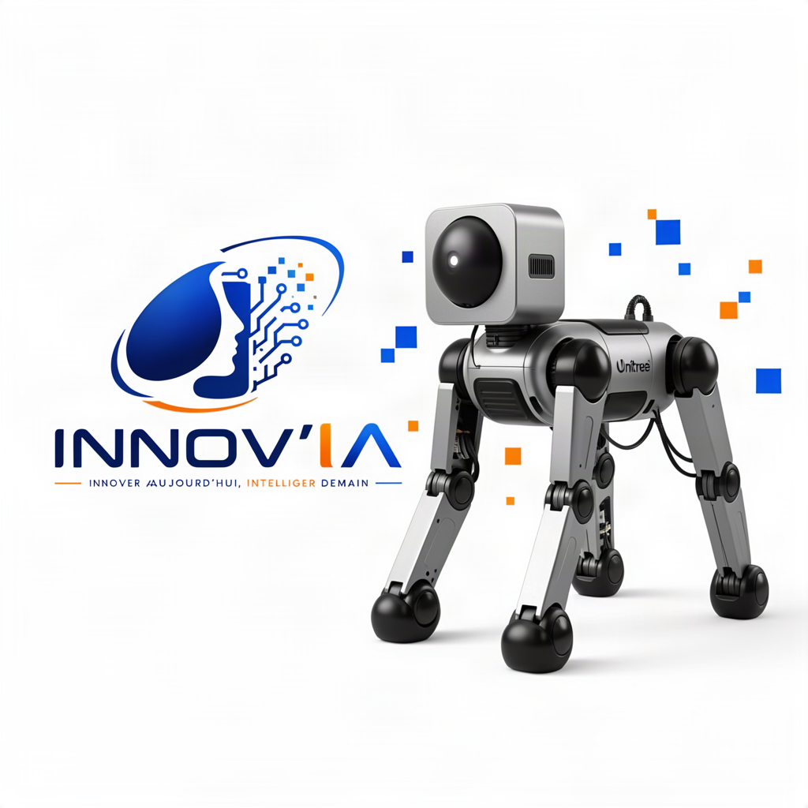

←

Veille Alsace
[DEMO]
[DEMO] Veille Alsace — Économie · Innovation & IA · Territoires
31/10/2026
[DEMO] Veille Alsace — Économie · Innovation & IA · Territoires
30/10/2026
[DEMO] Veille Alsace — Économie · Innovation & IA · Territoires
24/10/2026
Dernière mise à jour :
EDO